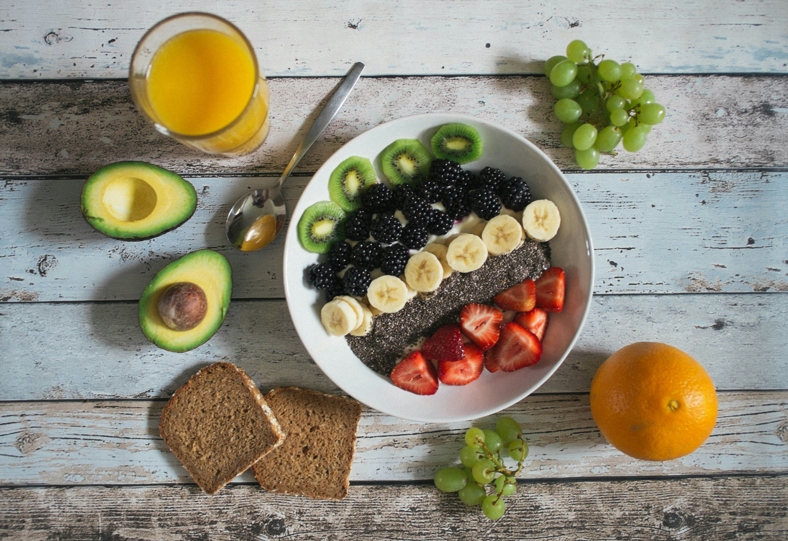
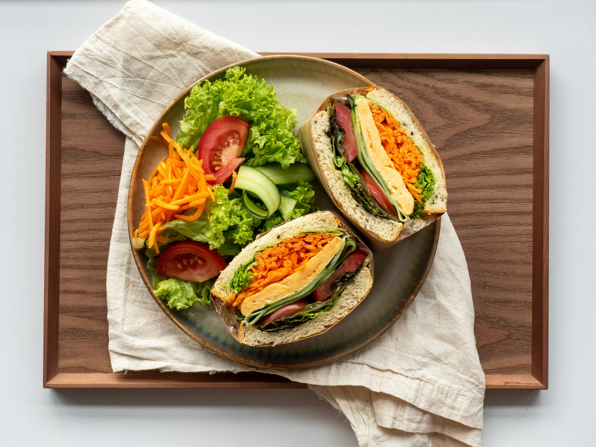

Desfrute de minhas receitas favoritas
Bem-vindo ao meu site de receitas! Aqui você encontrará uma variedade de pratos deliciosos que eu adoro preparar. Desde pratos principais até sobremesas, tenho certeza de que você encontrará algo que vai adorar. Explore as receitas e experimente algo novo na cozinha hoje mesmo!

Lanche saudável
Uma tigela nutritiva com frutas frescas, sementes e chia, perfeita para começar o dia com energia e sabor.

Pequeno almoço para manhãs sem pressa
Um almoço saudável e equilibrado, com sanduíche natural e salada fresca, perfeito para uma refeição leve e nutritiva.

Jantar
Um jantar saboroso e nutritivo, com pratos principais deliciosos e acompanhamentos saudáveis, perfeito para terminar o dia com sabor e energia.